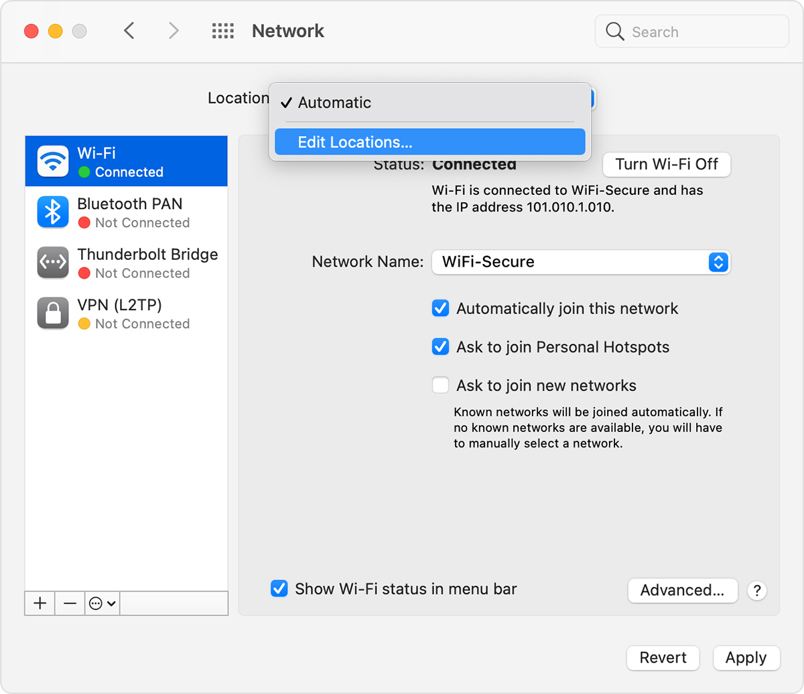
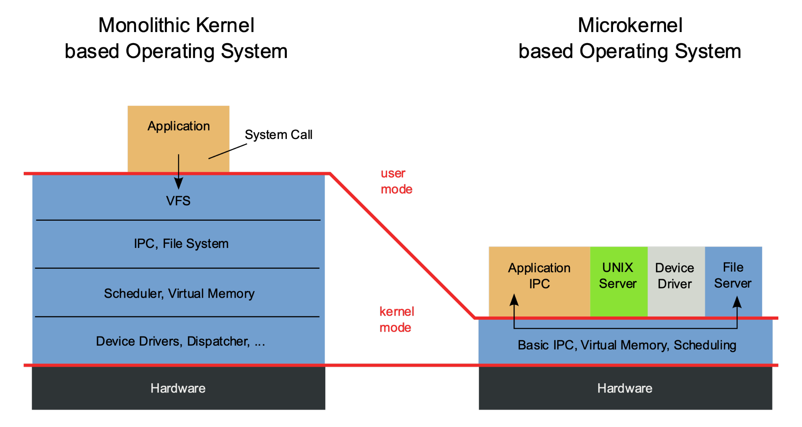

MacOS (formerly "Mac OS X" and later "OS X") is a line of open core graphical operating systems developed, marketed, and sold by Apple Inc., the latest of which is pre-loaded on all currently shipping Macintosh computers. macOS is the successor to the original classic Mac OS, which had been Apple's primary operating system since 1984. Unlike its predecessor, macOS is a UNIX operating system built on technology that had been developed at NeXT through the second half of the 1980s and up until Apple purchased the company in early 1997. The operating system was first released in 1999 as Mac OS X Server 1.0, followed in March 2001 by a client version (Mac OS X v10.0 "Cheetah"). Since then, six more distinct "client" and "server" editions of macOS have been released, until the two were merged in OS X 10.7 "Lion". Prior to its merging with macOS, the server edition – macOS Server – was architecturally identical to its desktop counterpart and usually ran on Apple's line of Macintosh server hardware. macOS Server included work group management and administration software tools that provide simplified access to key network services, including a mail transfer agent, a Samba server, an LDAP server, a domain name server, and others. With Mac OS X v10.7 Lion, all server aspects of Mac OS X Server have been integrated into the client version and the product re-branded as "OS X" (dropping "Mac" from the name). The server tools are now offered as an application macOS (/ˌmækoʊˈɛs/;[8] previously Mac OS X and later OS X) is a proprietary graphical operating system developed and marketed by Apple Inc. since 2001. It is the primary operating system for Apple's Mac computers. Within the market of desktop, laptop and home computers, and by web usage, it is the second most widely used desktop OS, after Windows NT.[9][10] macOS succeeded the classic Mac OS, a Macintosh operating system with nine releases from 1984 to 1999. During this time, Apple cofounder Steve Jobs had left Apple and started another company, NeXT, developing the NeXTSTEP platform that would later be acquired by Apple to form the basis of macOS. The first desktop version, Mac OS X 10.0, was released in March 2001, with its first update, 10.1, arriving later that year. Releases from Mac OS X 10.5 Leopard[11] and thereafter are UNIX 03 certified.[12] Apple's mobile operating system, iOS, has been considered a variant of macOS.[13] A prominent part of macOS's original brand identity was the use of Roman numeral X, pronounced "ten" as in Mac OS X and also the iPhone X. Apple began naming its releases after big cats, which lasted until OS X 10.8 Mountain Lion. Since OS X 10.9 Mavericks, releases have been named after locations in California.[14] Apple shortened the name to "OS X" in 2012 and then changed it to "macOS" in 2016, adopting the nomenclature that they were using for their other operating systems, iOS, watchOS, and tvOS. In 2020, Apple presented macOS Big Sur as version 11, after sixteen distinct versions of macOS 10. macOS has supported three major processor architectures, beginning with PowerPC-based Macs in 1999. In 2006, Apple transitioned to the Intel architecture with a line of Macs using Intel Core processors. In 2020, Apple began the Apple silicon transition, using self-designed, 64-bit ARM-based Apple M1 processors on new Mac computers.
Currently most operating systems support a variety of networking protocols, hardware, and applications for using them. This means that computers running dissimilar operating systems can participate in a common network for sharing resources such as computing, files, printers, and scanners using either wired or wireless connections. Networks can essentially allow a computer's operating system to access the resources of a remote computer to support the same functions as it could if those resources were connected directly to the local computer. This includes everything from simple communication, to using networked file systems or even sharing another computer's graphics or sound hardware. Some network services allow the resources of a computer to be accessed transparently, such as SSH which allows networked users direct access to a computer's command line interface. Client/server networking allows a program on a computer, called a client, to connect via a network to another computer, called a server. Servers offer (or host) various services to other network computers and users. These services are usually provided through ports or numbered access points beyond the server's IP address. Each port number is usually associated with a maximum of one running program, which is responsible for handling requests to that port. A daemon, being a user program, can in turn access the local hardware resources of that computer by passing requests to the operating system kernel. Many operating systems support one or more vendor-specific or open networking protocols as well, for example, SNA on IBM systems, DECnet on systems from Digital Equipment Corporation, and Microsoft-specific protocols (SMB) on Windows. Specific protocols for specific tasks may also be supported such as NFS for file access. Protocols like ESound, or esd can be easily extended over the network to provide sound from local applications, on a remote system's sound hardware. A network location is a group of settings for a specific network port (your computer’s Ethernet port, modem port or wireless networking port, for example). The Location menu in Network Preferences lets you save and quickly switch between multiple network locations. By default, your Mac uses the Automatic location, which automatically provides settings for any network ports that it detects are available. (A network port, also known as a network interface, is a way your computer connects to the internet or a network — such as a modem, Ethernet or Wi-Fi card.) In many cases, you can just use the default Automatic location without setting up additional locations. For example, if you use your Mac notebook with a Wi-Fi connection both at work and at home, you can just use the Automatic location, and the settings appropriate to each place are used. If you need to use the same network interface with different settings, you need to set up separate locations. For example, if you use your Ethernet port configured manually at work but via DHCP at home, you need to switch locations. Create a network location
A computer being secure depends on a number of technologies working properly. A modern operating system provides access to a number of resources, which are available to software running on the system, and to external devices like networks via the kernel.[38] The operating system must be capable of distinguishing between requests which should be allowed to be processed, and others which should not be processed. While some systems may simply distinguish between "privileged" and "non-privileged", systems commonly have a form of requester identity, such as a user name. To establish identity there may be a process of authentication. Often a username must be quoted, and each username may have a password. Other methods of authentication, such as magnetic cards or biometric data, might be used instead. In some cases, especially connections from the network, resources may be accessed with no authentication at all (such as reading files over a network share). Also covered by the concept of requester identity is authorization; the particular services and resources accessible by the requester once logged into a system are tied to either the requester's user account or to the variously configured groups of users to which the requester belongs. In addition to the allow or disallow model of security, a system with a high level of security also offers auditing options. These would allow tracking of requests for access to resources (such as, "who has been reading this file?"). Internal security, or security from an already running program is only possible if all possibly harmful requests must be carried out through interrupts to the operating system kernel. If programs can directly access hardware and resources, they cannot be secured. External security involves a request from outside the computer, such as a login at a connected console or some kind of network connection. External requests are often passed through device drivers to the operating system's kernel, where they can be passed onto applications, or carried out directly. Security of operating systems has long been a concern because of highly sensitive data held on computers, both of a commercial and military nature. The United States Government Department of Defense (DoD) created the Trusted Computer System Evaluation Criteria (TCSEC) which is a standard that sets basic requirements for assessing the effectiveness of security. This became of vital importance to operating system makers, because the TCSEC was used to evaluate, classify and select trusted operating systems being considered for the processing, storage and retrieval of sensitive or classified information. Network services include offerings such as file sharing, print services, email, web sites, and file transfer protocols (FTP), most of which can have compromised security. At the front line of security are hardware devices known as firewalls or intrusion detection/prevention systems. At the operating system level, there are a number of software firewalls available, as well as intrusion detection/prevention systems. Most modern operating systems include a software firewall, which is enabled by default. A software firewall can be configured to allow or deny network traffic to or from a service or application running on the operating system. Therefore, one can install and be running an insecure service, such as Telnet or FTP, and not have to be threatened by a security breach because the firewall would deny all traffic trying to connect to the service on that port. An alternative strategy, and the only sandbox strategy available in systems that do not meet the Popek and Goldberg virtualization requirements, is where the operating system is not running user programs as native code, but instead either emulates a processor or provides a host for a p-code based system such as Java. Internal security is especially relevant for multi-user systems; it allows each user of the system to have private files that the other users cannot tamper with or read. Internal security is also vital if auditing is to be of any use, since a program can potentially bypass the operating system, inclusive of bypassing auditing. Security. Built right in. We design Mac hardware and software with advanced technologies that work together to run apps more securely, protect your data, and help keep you safe on the web. And with macOS Big Sur available as a free upgrade, it’s easy to get the most secure version of macOS for your Mac.* More secure hardware means more secure software. Apple M1 chip. A shared architecture for security. The Apple M1 chip with built-in Secure Enclave brings the same powerful security capabilities of iPhone to Mac — protecting your login password, automatically encrypting your data, and powering file-level encryption so you stay safe. And the Apple M1 chip keeps macOS secure while it’s running, just as iOS has protected iPhone for years. Apple helps you keep your Mac secure with software updates. The best way to keep your Mac secure is to run the latest software. When new updates are available, macOS sends you a notification — or you can opt in to have updates installed automatically when your Mac is not in use. macOS checks for new updates every day and starts applying them in the background, so it’s easier and faster than ever to always have the latest and safest version. Safely run apps like never before. Protection starts at the core. The technically sophisticated runtime protections in macOS work at the very core of your Mac to keep your system safe from malware. This starts with state-of-the-art antivirus software built in to block and remove malware. Technologies like XD (execute disable), ASLR (address space layout randomization), and SIP (system integrity protection) make it difficult for malware to do harm, and they ensure that processes with root permission cannot change critical system files. Download apps safely from the Mac App Store. And the internet. Now apps from both the App Store and the internet can be installed worry-free. App Review makes sure each app in the App Store is reviewed before it’s accepted. Gatekeeper on your Mac ensures that all apps from the internet have already been checked by Apple for known malicious code — before you run them the first time. If there’s ever a problem with an app, Apple can quickly stop new installations and even block the app from launching again. Your data. Your rules. Stay in control of what data apps can access. Apps need your permission to access files in your Documents, Downloads, and Desktop folders as well as in iCloud Drive and external volumes. And you’ll be prompted before any app can access the camera or mic, capture keyboard activity, or take a photo or video of your screen. FileVault 2 encrypts your data. With FileVault 2, your data is safe and secure — even if your Mac falls into the wrong hands. FileVault 2 encrypts the entire drive on your Mac, protecting your data with XTS-AES 128 encryption. Mac computers built on the Apple M1 chip take data protection even further by using dedicated hardware to protect your login password and enabling file-level encryption, which developers can take advantage of — just as on iPhone. Safer browsing with Safari. Designed to protect your privacy. Online privacy isn’t just something you should hope for — it’s something you should expect. That’s why Safari comes with powerful privacy protection technology built in, including Intelligent Tracking Prevention that identifies trackers and helps prevent them from profiling or following you across the web. A new weekly Privacy Report on your start page shows how Safari protects you as you browse over time. Or click the Privacy Report button in your Safari toolbar for an instant snapshot of the cross-site trackers Safari is actively preventing on that web page. Automatic protections from intruders. Safari uses iCloud Keychain to securely store your passwords across all your devices. If it ever detects a security concern, Password Monitoring will alert you. Safari also prevents suspicious websites from loading and warns you if they’re detected. And because it runs web pages in separate processes, any harmful code is confined to a single browser tab and can’t crash the whole browser or access your data.
